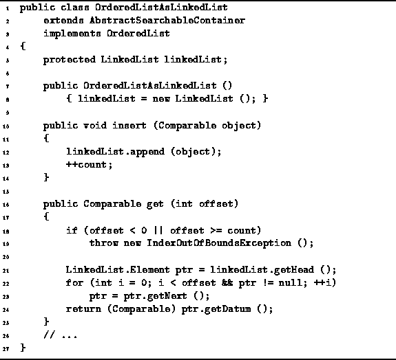
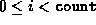
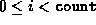

Data Structures and Algorithms
with Object-Oriented Design Patterns in Java
Data Structures and Algorithms
with Object-Oriented Design Patterns in Java
Program  gives
the code for the constructor, insert, and get methods
methods of the OrderedListAsLinkedList class.
The constructor simply creates an empty linked list.
Clearly, the running time of the constructor is O(1).
gives
the code for the constructor, insert, and get methods
methods of the OrderedListAsLinkedList class.
The constructor simply creates an empty linked list.
Clearly, the running time of the constructor is O(1).

Program: OrderedListAsLinkedList class constructor, insert, and get methods.
The insert method takes a Comparable object and adds it to the ordered list. As in the case of the ArrayAsLinkedList class, the object is added at the end of the ordered list. This is done simply by calling the append method from the LinkedList class.
The running time of the insert method is determined
by that of append.
In Chapter this was shown to be O(1).
The only other work done by the insert method is to
add one to the count variable.
Consequently, the total running time for insert is O(1).
Program also defines the get
method which takes an argument of type int.
This method is used to access elements of the ordered list
by their position in the list.
In this case, the position is specified by a non-negative,
integer-valued index.
Since there is no way to access directly
the  element of linked list,
the implementation of this method comprises a loop
which traverses the list to find the
element of linked list,
the implementation of this method comprises a loop
which traverses the list to find the  item.
The method returns a reference to the
item.
The method returns a reference to the  item,
provided .
Otherwise, i is not a valid subscript value
and the method throws an exception.
item,
provided .
Otherwise, i is not a valid subscript value
and the method throws an exception.
The running time of the get method depends
on the number of items in the list
and on the value of the subscript expression.
In the worst case,
the item sought is at the end of the ordered list.
Therefore, the worst-case running time of this algorithm,
assuming the subscript expression is valid,
is O(n), where  .
.
 Copyright © 1998 by Bruno R. Preiss, P.Eng. All rights reserved.
Copyright © 1998 by Bruno R. Preiss, P.Eng. All rights reserved.